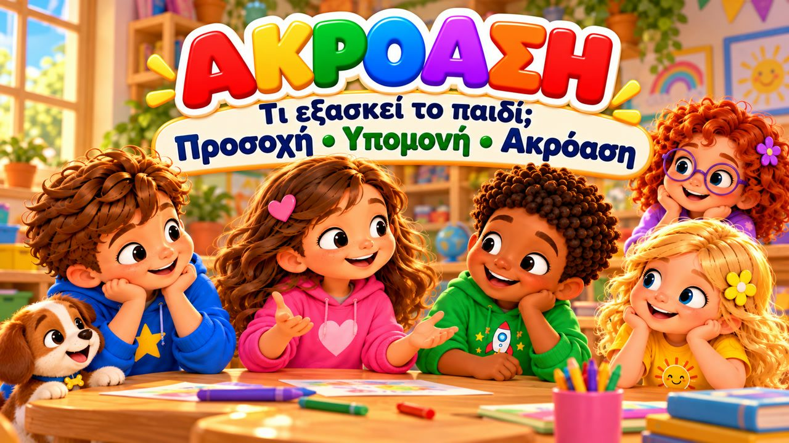

Σε Ακούω
Ένα χαρούμενο τραγούδι για την ακρόαση! 👂 Τραγουδήστε με τον Μαξ, τη Μία, τον Τζέι, τη Λίλη, τη Ρόζα και τον σκυλάκο Μπάντι, που μαθαίνουν πώς να ακούν πραγματικά τους φίλους τους: μάτια που κοιτάζουν, αυτιά που ακούν, χείλη που περιμένουν!
Το «Σε ακούω» είναι ένα τραγούδι για παιδιά που διδάσκει την ενεργητική ακρόαση: να κοιτάμε αυτόν που μιλά, να μην τον διακόπτουμε, να περιμένουμε τη σειρά μας και να ρωτάμε ευγενικά όταν δεν καταλάβαμε. Με μεγάλους στίχους-καραόκε και κινήσεις που μιμούνται τα παιδιά, ιδανικό για την ώρα του κύκλου στο νηπιαγωγείο, το δημοτικό, τα Εργαστήρια Δεξιοτήτων και το σπίτι (3–8 ετών).

▶💡 Γιατί είναι σημαντικό: Ακρόαση
Η καλή ακρόαση είναι η βάση για τη μάθηση, τη φιλία και για να ακολουθεί το παιδί οδηγίες. Τα παιδιά που ακούν καλά καταλαβαίνουν περισσότερα, μαλώνουν λιγότερο και νιώθουν πιο κοντά στους άλλους. Κατεβείτε στο ύψος των ματιών του παιδιού όταν του μιλάτε και παίξτε παιχνίδια ακρόασης, όπως το «χαλασμένο τηλέφωνο».
👨👩👧 Τι μαθαίνει το παιδί
- Να κοιτάζει και να προσέχει αυτόν που μιλά
- Να μη διακόπτει και να περιμένει τη σειρά του
- Να ρωτά ευγενικά: «Μπορείς να μου το ξαναπείς;»
- Ότι όταν ακούμε, δείχνουμε στον άλλον πως είναι σημαντικός
💬 Κουβέντα μετά το τραγούδι
- Πώς δείχνουμε σε κάποιον ότι τον ακούμε;
- Τι κάνουμε όταν θέλουμε να μιλήσουμε αλλά μιλάει κάποιος άλλος;
- Τι λέμε όταν δεν καταλάβαμε κάτι;
🏅 Κουίζ & Πτυχίο
Είδατε το τραγούδι μαζί; Τώρα διαβάστε στο παιδί κάθε ερώτηση — το παιδί δείχνει τη σωστή εικόνα. Αν απαντήσει και στις 6 ερωτήσεις, κερδίζει ένα πτυχίο για εκτύπωση!
🔒 Το όνομα χρησιμοποιείται μόνο για να φτιαχτεί το πτυχίο στη συσκευή σας. Δεν αποθηκεύουμε και δεν στέλνουμε τίποτα.
Τα κατάφερες! 🎉
Και οι 6 απαντήσεις είναι σωστές! Γράψτε το όνομα του παιδιού για να φτιαχτεί το πτυχίο.
🖨️ Δωρεάν εκτυπώσιμα
Δωρεάν για χρήση στο σπίτι και στην τάξη. Εκτυπώστε σε χαρτί Α4.
🖼️ Σκηνές από το τραγούδι


🎵 Κι άλλα τραγούδια


🎤 Στίχοι – Σε Ακούω
Έτοιμα τα μάτια;
ΝΑΙ!
Έτοιμα τ’ αυτιά;
ΝΑΙ!
Ώρα να ακούσουμε...
Πάμε παιδιά!
Όταν ένας φίλος μου
θέλει κάτι να μου πει,
τον κοιτάζω προσεκτικά
κι ακούω τη φωνή.
Δεν τον διακόπτω όταν μιλά,
περιμένω τη σειρά,
γιατί όταν τον προσέχω
τον καταλαβαίνω πιο καλά!
Μάτια που κοιτάζουν,
αυτιά που ακούν,
χείλη που περιμένουν,
το μυαλό συγκεντρωμένο!
Ακούω κάθε λέξη,
δίνω προσοχή,
κι έτσι καταλαβαίνω
τι θέλεις να μου πεις!
Σε ακούω, σε ακούω,
σε προσέχω όταν μιλάς!
Σε ακούω, σε ακούω,
κι όταν τελειώσεις, απαντώ κι εγώ μετά!
Μάτια κοιτάζουν!
Αυτιά ακούν!
Τα χείλη περιμένουν!
Το μυαλό είναι εδώ!
Σε ακούω, σε ακούω,
είμαι εδώ και σε προσέχω!
Μερικές φορές βιάζομαι
να πω κι εγώ πολλά,
μα μπορώ να περιμένω
τη δική μου τη σειρά.
Κι αν κάτι δεν κατάλαβα,
θα ρωτήσω ευγενικά:
«Μπορείς να μου το ξαναπείς;»
και θ’ ακούσω προσεκτικά!
Μάτια που κοιτάζουν,
αυτιά που ακούν,
χείλη που περιμένουν,
το μυαλό συγκεντρωμένο!
Ακούω κάθε λέξη,
δίνω προσοχή,
κι έτσι καταλαβαίνω
τι θέλεις να μου πεις!
Σε ακούω, σε ακούω,
σε προσέχω όταν μιλάς!
Σε ακούω, σε ακούω,
κι όταν τελειώσεις, απαντώ κι εγώ μετά!
Μάτια κοιτάζουν!
Αυτιά ακούν!
Τα χείλη περιμένουν!
Το μυαλό είναι εδώ!
Σε ακούω, σε ακούω,
είμαι εδώ και σε προσέχω!
Τα μάτια τι κάνουν;
ΚΟΙΤΑΖΟΥΝ!
Τ’ αυτιά τι κάνουν;
ΑΚΟΥΝ!
Όταν μιλάει ο φίλος;
ΠΕΡΙΜΕΝΩ!
Κι όταν τελειώσει;
ΑΠΑΝΤΑΩ!
Κι αν δεν κατάλαβα;
ΡΩΤΑΩ ΞΑΝΑ!
Και τώρα όλοι μαζί...
ΑΚΟΥΜΕ ΠΡΟΣΕΚΤΙΚΑ!
Ακούω τις λέξεις,
μα και τη φωνή,
βλέπω το πρόσωπό σου,
προσέχω τη στιγμή.
Γιατί όταν σε ακούω
και σου δίνω προσοχή,
σου δείχνω πως για μένα
είναι σημαντικό ό,τι πεις!
Σε ακούω, σε ακούω,
σε προσέχω όταν μιλάς!
Σε ακούω, σε ακούω,
κι όταν τελειώσεις, απαντώ κι εγώ μετά!
Μάτια κοιτάζουν!
Αυτιά ακούν!
Τα χείλη περιμένουν!
Το μυαλό είναι εδώ!
Σε ακούω, σε ακούω,
είμαι εδώ και σε προσέχω!
Μάτια!
ΚΟΙΤΑΖΟΥΝ!
Αυτιά!
ΑΚΟΥΝ!
Περιμένω...
και μετά μιλώ!
Σε ακούω,
με ακούς,
κι έτσι επικοινωνούμε!
Ακούμε ο ένας τον άλλο
και καλύτερα συνεννοούμαστε!